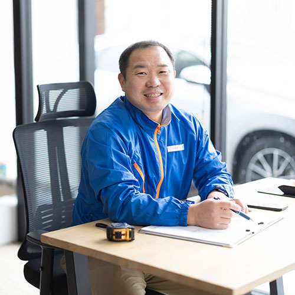
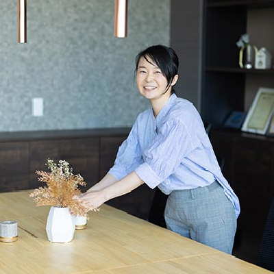
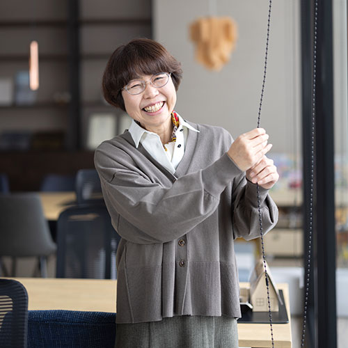

スタッフ紹介
代表挨拶
「住み継がれる住まい」を実現する為に。
私は不動産の買取り、住宅やオフィスの再生、リノベーション業界の黎明期に不動産業界に飛び込み、経験を重ねて参りました。また、創業後もスタッフとともに、地元長岡をはじめとする地方不動産市場の活性化と住まいの長寿命化に僅かながら尽力してきました。
壊すに忍びない立派な建物、活用されていない建物をはじめ、ポテンシャルを発揮できていない土地や建物が、地方には実に多く存在します。日本の住まいは適切なメンテナンス、質の高い修繕を繰り返すことで、もっと価値の高いものになり、時代を超え、いくつもの家族の幸せを育む箱になると考えます。
空き家を質の高いリノベーション住宅として再生し、次の世代に提供することで、空き家とニューファミリーのマッチングを図る。それが私たちの事業ミッションです。私共はこれからも「住み継がれる住まい」を実現する為、その仕組みや技術にさらに磨きをかけ、お客様、地域、社会に貢献して参ります。
スタッフ紹介
-
お客様に安心な取引をするための奉仕の気持ちと誠実さを大切にしています。
取締役 / 宅地建物取扱士 / 売却査定
山岸 高道
お客様の大切な資産である不動産を、適正に査定する経験と知識を積み重ねて参りました。お客様に安心な取引を提供するための奉仕の気持ちと誠実さを大事にしています。前職では県外勤務を経験し、同じ日本でも、不動産や建築は地域の気候や文化や特色で全く別のものになると知りました。これからも地域の事を学び、文化、人とのつながりを大事にして参ります。
戸建をはじめとする不動産の査定、仕入〜再生の企画、プロジェクトの立案を得意としています。 -
当たり前のように身の回りにある家が作られる規則や裏側を知ることができ、おもしろいです。
営業部 / 宅地建物取引士
酒井 花恋
中古住宅の査定対応やリノベーションプランの企画をしています。法律を学ぶのが好きで、この業界に入ってから家も様々な規則に従ってできていることを知り、家を見るのが楽しくなりました。また、リノベーションによって家の雰囲気が大きく変わっていくところを間近で見られることもこの仕事のおもしろさの一つです。
業界未経験ですが日々好奇心を持って楽しみながら仕事をしています。 -
 住む人、生活、想いを想像しながら責任感を持って設計しています。工事部課長 / 二級建築士 / 宅地建物取引士 / 既存住宅状況調査技術者
髙野 佐敏
リノベーションはもちろん、新築も含め、プランニングから図面設計、現場監理など完成までトータルで携わっています。材料の仕入れから、進行管理など一つ一つの業務が住宅のクオリティーに関わってくるため、常に最善を尽くし仕事をしています。設計したものが形になり、地図に載り、住んでくれる人がいて、喜んでもらえると達成感を味わうことができ、やりがいを感じます。
-
古いものの良さと新しい価値を掛け合わせるのがリノベーションの魅力です。
工事部 / 施工監理
半田 颯音
リノベーションのプランニングから、進行計画作成、業者さんのスケージュール管理などを行っています。住宅は工期が長いため、計画や段取りが大変な部分ではありますが、完成した時の喜びはとても大きいです。
私自身古い家が好きで、自宅も古民家を借りてDIYしながら暮らしています。私なりのリノベーションの魅力をこれから多くの方々に伝えていけたらと思っています。 -
たくさんの思いがつまったリノベーション住宅を、ぜひ体感してみてください。
工事部 / 二級建築士 / 宅地建物取引士
樋口 望美
物件のプランニングから現場管理まで、工事全般に携わっています。
中古住宅の個性を見極め、「いま」の暮らしに合った住宅へと再生できるようなプランを考えています。さまざまな条件の物件に合わせてリノベーションを実施することで、柔軟にご提案ができ ることがリノビレッジの良さだと思っています。
私たちや現場で作業されている職人のたくさんの思いがつまったリノベーション住宅を、ぜひ体感してみてください。 -
これからの住宅に、リノベーションという選択肢を提供します。
広報部
平沢 桃佳
物件の撮影やSNS運用など、お客様が物件と出会うきっかけとなる広報を担当しています。前職のカメラマンの経験を活かし、物件の魅力が伝わるよう、お気に入りの物件を見つけてもらえるように撮影することを心がけています。
リノベーションの魅力は、もともとあったものを活かしながら住みやすいように進化させているところ。そんな魅力を伝えることで、リノベーションという選択をしてくださる方が増えたら嬉しいです。 -
お客様の安心な暮らしを陰でサポートしています。
経営管理部 / 営業事務担当
加藤 樹里
弊社にお越しいただくお客様は子育て中のご家族がほとんど。私自身二児の母ですが、お子様のいる家庭は毎日忙しく余裕がなくなりがちです。少しでもほっとする瞬間をつくってあげたい。そんな気持ちで、笑顔で接客することを心がけています。
安全な不動産の取引には多岐にわたる調査が不可欠。アフター制度や住宅履歴なども含め、あまり目がいかない裏側でもしっかりお客様を応援します。 -
 お客様の気持ちに寄り添った接客を心がけています。経営管理部 / 経理 / 建築事務担当
長澤 千賀子
私自身三児の母として子育て中ですが、お子様のいるご家庭の気持ちに寄り添えるよう、心遣いの接客、ほっとできるオフィス環境をつくれるよう心がけています。弊社では、リノベーション工事を建設会社や工務店1社に丸投げせず、工種毎に専門の会社や職人に直接施工を依頼しています。1棟の工事に十数社の会社が入ることも珍しくありません。思いやりのあるきめ細かな対応で、施工業者様との関係を経理の立場から応援出来たら幸いです。
-
 これからの時代のためにもっとリノベーションを広めていきたいです。経営管理部
矢野 由美
契約書などの書類管理をはじめ総務の立場から業務をサポートし、日々丁寧で正確な仕事を心がけています。
もともと物件を見ることが好きで、リノベーションで家が生まれ変わる様子を見ることにワクワクを感じます。今ある家の良い部分を残し、新たな付加価値をつけるリノベーションは、SDGsが普及してきたこれからの時代に必要なことだと思います。このリノベーションの素晴らしさを皆さんに伝えていきたいです。